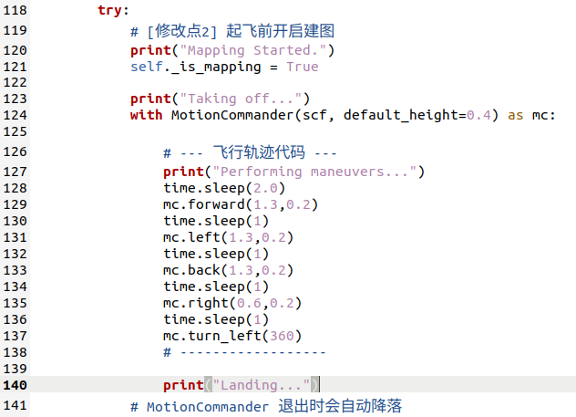

实验 7: 自主建图+复习
Autonomous Mapping and Review
实验手册4——自主建图+复习
实验目标
在前序实验中，同学们已经体验了操控无人机进行建图。本节课将进一步编写预定代码，让无人机自主飞行，并对复杂地图环境进行建模。
同时，本节课也会帮助大家回顾前三天学习内容，为综合项目展示任务做准备。
实验准备
之前已经配置好连接到无人机的客户端的虚拟机系统。并且需要具备前几门实验已经积累的linux系统操作经验。再需要一点的python编程基础。
本实验中需要用到的硬件设备：
* Crazyflie 2.0
* Crazyradio PA
* Flow deck
* Multiranger deck
实验步骤
本次实验将主要进行python脚本的运行，所有的编程库的调用，皆来自于官方的网址教程：用户指南 |比特热潮
若在进行实验中遇到一些困难，也可点击上述网址进行进一步的参考。同时部分操作和知识要点也在上节课的实验手册中有提及，如有不会的地方可以再参考上节的实验手册，这部分操作这节实验手册不再赘述。
实验：自主建图
首先附上该实验的代码auto_multiranger_pointcloud.py。
在该代码的中间部分实例化了一个motioncommander，同学们在这图示的128到137行的位置进行代码的修改，利用之前学到的motioncommander的编程知识编写出自己的控制无人机自主飞行的代码。
注意，要想无人机建图的点云质量较高，建议放慢无人机的速度，给到0.2m/s的速度或者更低，注意无人机头部前方的朝向位置，每经过一些拐点，无人机的转向的方向和角度都是需要考虑的地方。

本节课的实验场地如下，尝试用该程序让无人机自主飞行建立这个地图的清晰的点云图。

复习
各位同学，本次暑期学校的前三天实践已经进入综合整理阶段。本节课不再新增大量实验，而是鼓励大家复习之前学习到的内容，针对还不熟悉的环节查漏补缺，为后续综合项目展示做好准备。
本节课也会把前三天使用到的实验手册和代码打包整理好，供大家继续调试和复盘。同学们可以回忆本次暑期学校已经学习到的内容，例如：
如何在windows电脑上运行linux虚拟机？
Linux系统的基础操作
Crazyflie无人机的基本信息
如何在linux系统上搭建crazyflie无人机的运行环境？
Crazyflie无人机的基本编程库的使用
Crazyflie无人机的传感器原理和应用
无人机自主探索的基础理论
列出以上知识点供大家启发
后续综合项目展示会以实践方式展开，期望同学们把学到的理论落实到可运行的无人机任务中。展示内容将分为创意板块和竞速板块，具体任务都来自前三天实验手册涉及的知识点；完成基础任务即可达到展示要求，实现效果更好的小组会获得更高评价。